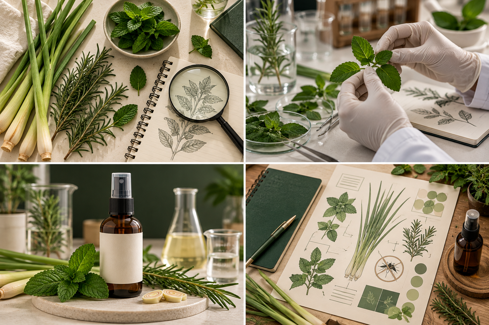
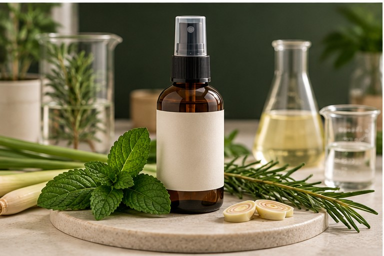

¿Por qué investigar?
Las picaduras pueden causar molestias y algunas especies de mosquitos transmiten enfermedades como el dengue. La prevención es especialmente relevante en entornos cálidos y húmedos.
Bitácora escolar sobre repelentes de origen vegetal, sus posibilidades y sus límites científicos.
NAVI BIO REPEL es un proyecto de investigación escolar sobre el potencial de las plantas aromáticas como punto de partida para desarrollar un repelente de mosquitos. Surge de una inquietud cercana a nuestra realidad: ¿podemos aprovechar hojas de origen vegetal para estudiar alternativas de protección frente a las picaduras?
En Guayaquil, el clima cálido y las lluvias crean condiciones favorables para la presencia de mosquitos. Por eso es importante comprender cómo se transmiten algunas enfermedades, qué medidas preventivas sí están comprobadas y qué limitaciones tienen las preparaciones caseras.
La experiencia recordada incluye triturar hojas, incorporar agua destilada, filtrar con papel, mezclar y dejar reposar. Las hojas parecían ser de menta y eucalipto, pero no se ha confirmado su identificación botánica. El objetivo de este trabajo es documentar ese proceso con responsabilidad científica, sin atribuirle una eficacia no demostrada.
Autor: Víctor Alejandro Lituma Verduga · Curso: 1.º BGU Foxtrot.
Nuestra investigación reúne el problema, los objetivos, el fundamento botánico y las precauciones necesarias para interpretar el prototipo.
Las picaduras pueden causar molestias y algunas especies de mosquitos transmiten enfermedades como el dengue. La prevención es especialmente relevante en entornos cálidos y húmedos.
Para conocer el uso de plantas aromáticas, describir un procedimiento escolar y distinguir las hipótesis de los resultados comprobados.
En la comunidad educativa de Guayaquil, Ecuador, donde el control de criaderos y la prevención de picaduras son hábitos de interés público.
Repelentes, mosquito Aedes aegypti, menta, eucalipto, extracción acuosa, filtración, riesgos microbiológicos y fuentes oficiales de prevención.
Es un producto que busca reducir la aproximación o las picaduras de insectos. No necesariamente mata al mosquito: su función principal es disuadirlo. Su protección depende del ingrediente activo, la concentración y la formulación.
El dengue es una infección viral transmitida principalmente por mosquitos Aedes. La OMS recomienda prevenir picaduras y eliminar lugares donde los mosquitos se reproducen, especialmente recipientes con agua estancada.
Investigar el potencial de plantas aromáticas y documentar un prototipo escolar de extracción acuosa, evaluando críticamente sus posibilidades y limitaciones.
Identificar plantas candidatas; recopilar fuentes científicas; describir los materiales y etapas recordadas; reconocer riesgos de una mezcla acuosa; presentar el trabajo de forma clara y formular recomendaciones basadas en evidencia.
Las plantas del género Mentha contienen compuestos aromáticos, entre ellos mentol en algunas especies. Existen investigaciones sobre extractos y aceites de plantas aromáticas, pero una infusión o macerado casero no tiene automáticamente la misma composición ni eficacia.
«Eucalipto» puede referirse a distintas especies. Algunas contienen 1,8-cineol. Es importante no confundir hojas de eucalipto común con el aceite de eucalipto de limón (OLE) formulado y evaluado en repelentes registrados; tampoco es equivalente al aceite esencial puro.
Los mosquitos utilizan señales como olores corporales, dióxido de carbono y calor para localizar huéspedes. Algunos compuestos pueden modificar su comportamiento, pero percibir un aroma intenso no demuestra por sí solo protección contra picaduras.
Natural significa que procede de fuentes de la naturaleza; no quiere decir «sin sustancias químicas», «seguro» o «eficaz». Las plantas contienen compuestos químicos y pueden producir irritación o alergias.
El agua extrae determinados componentes, pero no necesariamente los compuestos presentes en aceites esenciales. Además, una mezcla vegetal con agua y sin conservación validada puede contaminarse durante el reposo. No debe aplicarse sobre la piel sin evaluación apropiada.
Haría falta un protocolo supervisado y validado, controles comparativos, mediciones reproducibles, revisión de seguridad y criterios claros de eficacia. No se realizaron ni se documentaron esos ensayos en este blog.
La OMS y los CDC recomiendan eliminar agua acumulada, usar barreras físicas como mosquiteros y ropa adecuada, y escoger repelentes registrados y de eficacia evaluada siguiendo sus etiquetas.
Hipótesis de trabajo: ciertas plantas aromáticas contienen sustancias de interés para la investigación de repelentes; sin embargo, el prototipo acuoso descrito no ha demostrado duración, eficacia ni seguridad como producto cutáneo.
Estos son los recursos compatibles con el procedimiento recordado. La identidad exacta de las hojas y las cantidades utilizadas no están confirmadas.
Hojas de aspecto similar a menta y eucalipto, pendientes de identificación. No se afirma que fueran exactamente esas especies.
Se recuerda como el líquido añadido a las hojas trituradas durante la preparación.
Utensilio para machacar y fragmentar las hojas y favorecer su contacto con el líquido.
Se utilizó para separar residuos vegetales sólidos de la parte líquida.
Recipiente limpio para presentar el prototipo, debidamente identificado como muestra escolar no evaluada.
Cuaderno, computadora, internet y fuentes oficiales para documentar la investigación.
Se reunieron hojas aromáticas y se machacaron para fragmentarlas.
Se agregó agua destilada a las hojas trituradas.
Se pasó la mezcla por papel filtrador para separar restos sólidos.
Se mezcló el líquido y se dejó reposar durante algunos días; el tiempo exacto se desconoce.
La descripción es un registro académico de lo recordado, no una receta validada para fabricar un repelente de uso humano. No se recomienda conservar ni aplicar una mezcla acuosa vegetal de estabilidad desconocida.
Las siguientes imágenes acompañan visualmente la explicación de las etapas. El registro de actividades se basa en la información recordada y la investigación documental; no se presentan mediciones de laboratorio.

Revisión del dengue, los mosquitos y las características de las plantas aromáticas.
Comparación de fuentes y diferenciación entre un extracto casero y un repelente evaluado.
Reconstrucción descriptiva del machacado de hojas, uso de agua destilada, filtrado y reposo.
Diseño del blog para compartir el aprendizaje con estudiantes, docentes y familias.
NAVI BIO REPEL es el nombre de nuestro prototipo académico de origen vegetal. Se concibió como una propuesta escolar para estudiar la extracción de componentes de hojas aromáticas mediante agua destilada y filtración.
Un concepto de repelente vegetal acompañado por su investigación y presentación digital. No se dispone de una fórmula completa verificada, registro sanitario ni ensayos de repelencia.
Promover la curiosidad científica, el cuidado del entorno y el análisis responsable de alternativas vegetales.
A estudiantes, docentes y familias de la comunidad educativa que desean comprender el proceso y la prevención de picaduras.
Problema, objetivos, antecedentes, plantas candidatas, materiales, proceso, límites, conclusiones y fuentes consultadas.
Como exposición digital, material para charlas escolares y ejemplo de investigación responsable. No debe presentarse como un repelente clínicamente comprobado.

Cuando comenzamos a pensar en NAVI BIO REPEL, nos llamó la atención que plantas conocidas por sus aromas pudieran formar parte de una investigación sobre mosquitos. El proyecto nos permitió mirar de otra manera materiales cotidianos y comprender que una idea sencilla puede generar preguntas importantes.
El paso más valioso fue descubrir que un aroma agradable o fuerte no es prueba suficiente de que una mezcla evite picaduras. También aprendimos que la palabra «natural» no elimina los riesgos de irritación o contaminación. Una propuesta responsable debe reconocer aquello que todavía no se ha medido.
Consideramos que investigar es más que fabricar un producto: significa comparar información, registrar el procedimiento, reconocer incertidumbres y compartir conclusiones honestas. Por eso presentamos NAVI BIO REPEL como un prototipo educativo que puede inspirar nuevas preguntas y no como sustituto de los métodos de prevención recomendados por las autoridades sanitarias.
Finalmente, creemos que el aprendizaje debe llegar a nuestra comunidad: reducir criaderos, protegerse de las picaduras y consultar fuentes confiables son acciones que sí podemos promover desde el colegio.
La prevención de picaduras es relevante para nuestra comunidad y debe combinar repelentes de eficacia comprobada con medidas ambientales y barreras físicas.
La menta y el eucalipto son plantas aromáticas de interés investigativo, pero la identificación exacta de las hojas utilizadas en nuestro proyecto sigue sin confirmarse.
El procedimiento recordado —triturar, añadir agua destilada, filtrar, mezclar y reposar— permite explicar una extracción acuosa básica, no demostrar un repelente eficaz.
Los productos naturales también contienen sustancias químicas y pueden implicar riesgos. Las mezclas acuosas requieren controles de estabilidad, higiene y seguridad.
No contamos con resultados de pruebas de eficacia, duración o seguridad cutánea; por tanto, no corresponde atribuir al prototipo protección contra el dengue.
El proyecto fortaleció la investigación documental, el pensamiento crítico, la comunicación digital y la responsabilidad al presentar información científica.
Confirmar la identidad de las plantas con ayuda del docente, documentar cantidades y fechas en futuras prácticas, evitar pruebas sobre personas sin supervisión adecuada y utilizar repelentes evaluados cuando se necesite protección real.
Referencias institucionales empleadas para respaldar las recomendaciones de prevención y la interpretación científica del proyecto.
Dengue y dengue grave: transmisión, prevención y control de criaderos.
Consultar fuente oficial ↗Medidas de prevención, repelentes registrados y limitaciones de los repelentes naturales.
Consultar fuente oficial ↗Ingredientes activos utilizados en repelentes cutáneos registrados.
Consultar fuente oficial ↗Precauciones para utilizar repelentes y seguir las indicaciones de sus etiquetas.
Consultar fuente oficial ↗Distinción entre el aceite de eucalipto de limón formulado y el aceite esencial puro.
Consultar fuente oficial ↗La información científica de estas fuentes no equivale a una validación experimental de NAVI BIO REPEL.

Comparte esta investigación escaneando el código QR con la cámara del celular.